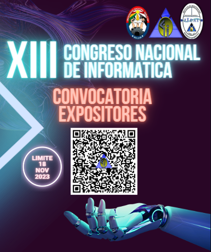

CONVOCATORA PARA EXPOSITORES
El Congreso Nacional de Informática es un evento académico anual organizado por la Universidad Nacional "Siglo XX" de Bolivia, a través del Instituto de Investigación IIDAI de la carrera Ingeniería Informática y tiene por objetivo socializar los avances de la Ciencia y Tecnología informática.
El evento busca fortalecer la colaboración y el intercambio de conocimientos entre profesionales, docentes y estudiantes en el campo de la informática, proporcionando un espacio para presentar y discutir los avances tecnológicos, investigaciones , proyectos en informática y promover la formación y desarrollo de habilidades en informática.
El congreso en su XIII versión, se llevara adelante el 29 y 30 de noviembre de 2023 en modalidad hibrida, virtual para expositores del exterior del país y presencial para expositores de Bolivia. Las actividades presenciales se llevarán adelante en ambientes de la Universidad Nacional "Siglo XX" en Llallagua - Potosí - Bolivia.
Invitamos a todos los profesionales a participar en calidad de expositores, presentando su ponencia , la temática es libre dentro del área de la Informática, pero se valorará que estén dentro de los ejes: temáticos Inteligencia Artificial, XR, AR, VR e Interacción Humano Computador.